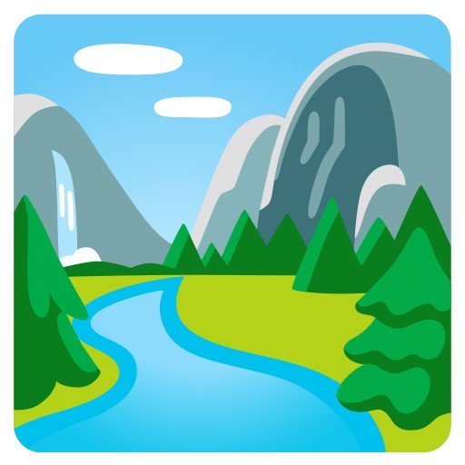

11 จุดเช็คอิน ภูผาม่าน ขอนแก่น บรรยากาศดีๆ สถานที่สวยๆ มุมถ่ายรูปสุดปัง ใครที่มาเที่ยวภูผาม่าน ขอนแก่น ต้องห้ามพลาด
ภูผาม่าน เป็นอำเภอเล็กๆ ในจังหวัดขอนแก่น แต่ตอนนี้ถือเป็นอีกหนึ่งสถานที่ท่องเที่ยวสุดฮิตของขอนแก่น เพราะที่นี่มีทั้งภูเขา คาเฟ่ โฮมสเตย์ ธรรมชาติที่สวยงาม และห่างจากตัวเมืองขอนแก่น แค่ประมาณ 100 กว่ากิโลเมตรเท่านั้น เหมาะกับการพักผ่อนในวันหยุดของใครหลายๆคน หนาวนี้...แนะนำค่ะ ไปตามรอยได้นะ